Clinical Conditions Management
CAS Flow
%%{init: {"theme": "base", "themeVariables": {
"primaryColor": "#eff6ff",
"primaryTextColor": "#1e3a5f",
"primaryBorderColor": "#93c5fd",
"lineColor": "#9ca3af",
"secondaryColor": "#fffbeb",
"tertiaryColor": "#f1f5f9",
"edgeLabelBackground": "#ffffff",
"fontFamily": "Arial",
"fontSize": "16px"
}}}%%
flowchart TD
BEGIN([Start]) --> START[/Consultation
Details/]
START --> SYM[/Symptoms & History/]
SYM --> IPFETCH[Fetch IPS
status]
IPFETCH --> IP{Is IP}
IP -.- IPNOTE["ℹ️ The IP check is automatic — the system
determines whether this is a CAS or IPS
consultation based on the dispensing site."]
IP -->|No - CAS| COND[/Condition\nSelection/]
COND --> CONDROUTE[Determine
clinical flow]
CONDROUTE --> AUTOROUTE{Condition
type}
COND -->|Condition not found| OSL[/Limited Outcome\nSelection/]
AUTOROUTE -.- CASNOTE["ℹ️ CAS auto-routes to the correct clinical
flow based on the condition selected.
On IPS, the template is chosen manually."]
AUTOROUTE -->|Sore Throat| SCT[/Select Scoring\nTool/]
SCT --> FORK{FeverPAIN /\nCentor?}
AUTOROUTE -->|UTI| DXUTI[/Diagnosing UTI/]
AUTOROUTE -->|Other| GCA[/General Clinical\nAssessment/]
OSL --> OSLOUT{Outcome?}
OSLOUT -->|Refer| RALF[/"Refer (+ Advise)"/]
OSLOUT -->|Advise| ADV[/Advise/]
GCA --> OS
FORK -->|FeverPAIN| FPQ[/FeverPAIN
Assessment/]
FPQ --> FPOUT[/FeverPAIN
Outcomes/]
FPOUT --> POCT{Point of Care\nTest?}
FORK -->|Centor| CENTQ[/Centor
Assessment/]
CENTQ --> CENTOUT[/Centor
Outcomes/]
CENTOUT --> POCT
POCT -->|Yes| POCTSCR[/Point of Care Test/]
POCTSCR --> OS
POCT -->|No| OS
DXUTI --> UTICAL[/UTI Clinical
Assessment/]
UTICAL --> UTIDIP{UTI Dip
Test Required?}
UTIDIP -->|Yes| UTIDIPSCR[/UTI Dip Test/]
UTIDIPSCR --> OS
UTIDIP -->|No| OS
OS[/Full Outcome\nSelection/]
OS --> OSOUT{Outcome?}
OSOUT -->|Supply| SUP[/"Supply (+ Advise)"/]
OSOUT -->|Supply + Refer| SA[/"Supply, Refer (+ Advise)"/]
OSOUT -->|Refer| RALF[/"Refer (+ Advise)"/]
OSOUT -->|Advise| ADV[/Advise/]
RALF & ADV & SUP & SA --> SENS[/Is Consultation\nSensitive?/]
SENS --> SENDGP[/Send to GP/]
SENDGP --> CONSSUM[/Consultation Summary/]
CONSSUM --> DONE[/Consultation Complete/]
DONE --> END([End])
classDef note fill:#fefce8,stroke:#fde047,stroke-width:1px,stroke-dasharray:4,color:#713f12,font-style:italic
classDef decision fill:#fffbeb,stroke:#f59e0b,stroke-width:1.5px,color:#92400e
classDef clinical fill:#eff6ff,stroke:#93c5fd,stroke-width:1.5px,color:#1e3a5f
classDef admin fill:#f1f5f9,stroke:#cbd5e1,stroke-width:1.5px,color:#334155
classDef soreThroat fill:#ede9fe,stroke:#c4b5fd,stroke-width:1.5px,color:#4c1d95
classDef outRef fill:#fee2e2,stroke:#fca5a5,stroke-width:1.5px,color:#991b1b
classDef outSup fill:#dcfce7,stroke:#86efac,stroke-width:1.5px,color:#166534
classDef done fill:#dcfce7,stroke:#4ade80,stroke-width:2px,color:#166534,font-weight:700
classDef sysProc fill:#ede9fe,stroke:#a78bfa,stroke-width:1.5px,stroke-dasharray:4,color:#4c1d95
class IP,AUTOROUTE,FORK,POCT,UTIDIP,OSOUT,OSLOUT decision
class CASNOTE,IPNOTE note
class START,SYM,COND,GCA,FPQ,FPOUT,CENTQ,CENTOUT,POCTSCR,DXUTI,UTICAL,UTIDIPSCR,OS,OSL,SCT,SENS,SENDGP,CONSSUM,DONE clinical
class BEGIN,END admin
class RALF,ADV outRef
class SUP,SA outSup
class IPFETCH,CONDROUTE sysProc
click START href "#step-1" _self
click SYM href "#step-2" _self
click COND href "#step-4" _self
click GCA href "#step-5" _self
click SCT href "#step-3f" _self
click DXUTI href "#step-3c" _self
click UTICAL href "#step-3d" _self
click FPQ href "#step-3g" _self
click FPOUT href "#step-3h" _self
click CENTQ href "#step-3j" _self
click CENTOUT href "#step-3k" _self
click UTIDIPSCR href "#step-3e" _self
click POCTSCR href "#step-3i" _self
click OS href "#step-7a" _self
click OSL href "#step-7b" _self
click RALF href "#step-8b" _self
click SUP href "#step-8a-cas" _self
click SA href "#step-8a-sa-cas" _self
click ADV href "#step-8c" _self
click SENS href "#step-9" _self
click SENDGP href "#step-10" _self
click CONSSUM href "#step-11" _self
click DONE href "#step-12" _self
IP Flow
%%{init: {"theme": "base", "themeVariables": {
"primaryColor": "#eff6ff",
"primaryTextColor": "#1e3a5f",
"primaryBorderColor": "#93c5fd",
"lineColor": "#9ca3af",
"secondaryColor": "#fffbeb",
"tertiaryColor": "#f1f5f9",
"edgeLabelBackground": "#ffffff",
"fontFamily": "Arial",
"fontSize": "16px"
}}}%%
flowchart TD
BEGIN([Start]) --> START[/Consultation
Details/]
START --> SYM[/Symptoms & History/]
SYM --> IPFETCH[Fetch IPS
status]
IPFETCH --> IP{Is IP}
IP -.- IPNOTE["ℹ️ The IP check is automatic — the system
determines whether this is a CAS or IPS
consultation based on the dispensing site."]
IP -->|Yes - IPS| SVC[/Service\nSelection/]
SVC -->|IPS service| TPL
SVC -->|CAS service| CASREF(["↗ CAS flow"])
TPL[/Template\nSelection/]
TPL -.- IPSNOTE["ℹ️ On IPS, the clinician manually selects
the template to determine the clinical
flow. On CAS, this is automatic based
on the condition selected."]
TPL --> GCA[/General Clinical\nAssessment/]
GCA --> CONF[/Confirm Diagnosis/]
CONF --> WDX{Diagnosis\nreached?}
WDX -->|Yes| OS
WDX -->|No| OSL[/Limited Outcome\nSelection/]
TPL --> SCT[/Select Scoring\nTool/]
SCT --> FORK{FeverPAIN /\nCentor?}
FORK -->|FeverPAIN| FPQ[/FeverPAIN\nAssessment/]
FPQ --> FPOUT[/FeverPAIN\nOutcomes/]
FPOUT --> POCT{Point of Care\nTest?}
FORK -->|Centor| CENTQ[/Centor\nAssessment/]
CENTQ --> CENTOUT[/Centor\nOutcomes/]
CENTOUT --> POCT
POCT -->|Yes| POCTSCR[/Point of Care Test/]
POCTSCR --> CONF
POCT -->|No| CONF
TPL --> DXUTI[/Diagnosing UTI/]
DXUTI --> UTICAL[/UTI Clinical\nAssessment/]
UTICAL --> UTIDIP{UTI Dip
Test Required?}
UTIDIP -->|Yes| UTIDIPSCR[/UTI Dip Test/]
UTIDIPSCR --> CONF
UTIDIP -->|No| CONF
OSL --> OSLOUT{Outcome?}
OSLOUT -->|Refer| RALF[/"Refer (+ Advise)"/]
OSLOUT -->|Advise| ADV[/Advise/]
OS[/Full Outcome\nSelection/]
OS --> OSOUT{Outcome?}
OSOUT -->|Supply| SUP[/"Supply (+ Advise)"/]
OSOUT -->|Supply + Refer| SA[/"Supply, Refer (+ Advise)"/]
OSOUT -->|Refer| RALF
OSOUT -->|Advise| ADV
RALF & ADV & SUP & SA --> SENS[/Is Consultation\nSensitive?/]
SENS --> SENDGP[/Send to GP/]
SENDGP --> CONSSUM[/Consultation Summary/]
CONSSUM --> DONE[/Consultation Complete/]
DONE --> END([End])
classDef note fill:#fefce8,stroke:#fde047,stroke-width:1px,stroke-dasharray:4,color:#713f12,font-style:italic
classDef decision fill:#fffbeb,stroke:#f59e0b,stroke-width:1.5px,color:#92400e
classDef clinical fill:#eff6ff,stroke:#93c5fd,stroke-width:1.5px,color:#1e3a5f
classDef admin fill:#f1f5f9,stroke:#cbd5e1,stroke-width:1.5px,color:#334155
classDef soreThroat fill:#ede9fe,stroke:#c4b5fd,stroke-width:1.5px,color:#4c1d95
classDef outRef fill:#fee2e2,stroke:#fca5a5,stroke-width:1.5px,color:#991b1b
classDef outSup fill:#dcfce7,stroke:#86efac,stroke-width:1.5px,color:#166534
classDef done fill:#dcfce7,stroke:#4ade80,stroke-width:2px,color:#166534,font-weight:700
classDef sysProc fill:#ede9fe,stroke:#a78bfa,stroke-width:1.5px,stroke-dasharray:4,color:#4c1d95
classDef xref fill:#f8fafc,stroke:#94a3b8,stroke-width:1.5px,stroke-dasharray:4,color:#475569,font-style:italic
class IP,WDX,FORK,POCT,UTIDIP,OSOUT,OSLOUT decision
class IPSNOTE,IPNOTE note
class START,SYM,GCA,CONF,FPQ,FPOUT,CENTQ,CENTOUT,POCTSCR,DXUTI,UTICAL,UTIDIPSCR,SVC,TPL,OS,OSL,SCT,SENS,SENDGP,CONSSUM,DONE clinical
class BEGIN,END admin
class RALF,ADV outRef
class SUP,SA outSup
class IPFETCH sysProc
class CASREF xref
click CASREF href "#flow-cas" _self
click START href "#step-1" _self
click SYM href "#step-2" _self
click SVC href "#step-3" _self
click TPL href "#step-3b" _self
click SCT href "#step-3f" _self
click GCA href "#step-5" _self
click CONF href "#step-6" _self
click DXUTI href "#step-3c" _self
click UTICAL href "#step-3d" _self
click FPQ href "#step-3g" _self
click FPOUT href "#step-3h" _self
click CENTQ href "#step-3j" _self
click CENTOUT href "#step-3k" _self
click UTIDIPSCR href "#step-3e" _self
click POCTSCR href "#step-3i" _self
click OS href "#step-7a" _self
click OSL href "#step-7b" _self
click RALF href "#step-8b" _self
click SUP href "#step-8a-ip" _self
click SA href "#step-8a-sa-ip" _self
click ADV href "#step-8c" _self
click SENS href "#step-9" _self
click SENDGP href "#step-10" _self
click CONSSUM href "#step-11" _self
click DONE href "#step-12" _self
Each wizard step linked to its Figma mockup, with field names and types extracted from the UI.
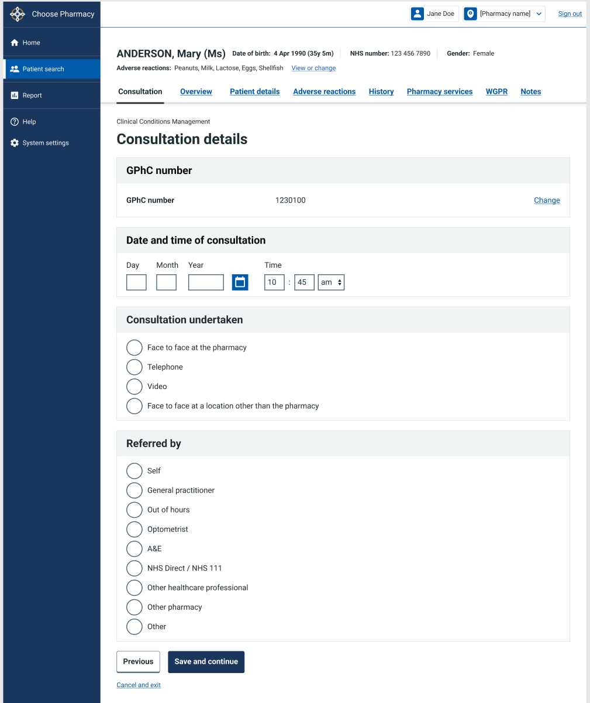
| Field | Type | Notes |
|---|---|---|
GPhC number |
string | Pre-filled; editable via Change link |
consultationDate |
date | Day / Month / Year inputs |
consultationTime |
time | HH:MM AM/PM |
consultationMethod |
enum | face_to_face_pharmacy | telephone | video | face_to_face_other |
referredBy |
enum | self | gp | out_of_hours | optometrist | ae | nhs_direct | other_healthcare | other_pharmacy | other |
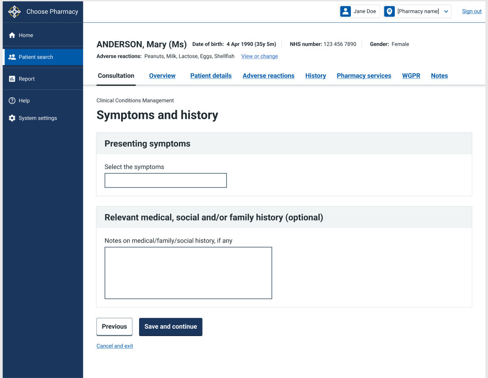
| Field | Type | Notes |
|---|---|---|
presentingSymptoms |
string[] | Multi-select from condition symptom list |
medicalHistory |
string? | Free text — optional |
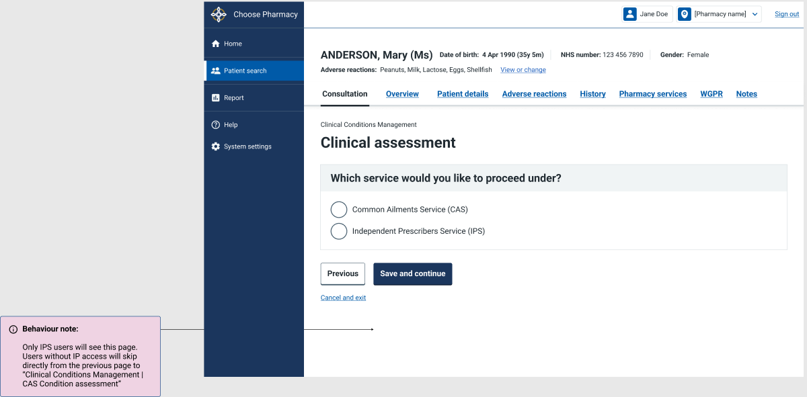
| Field | Type | Notes |
|---|---|---|
service |
enum | cas | ips |
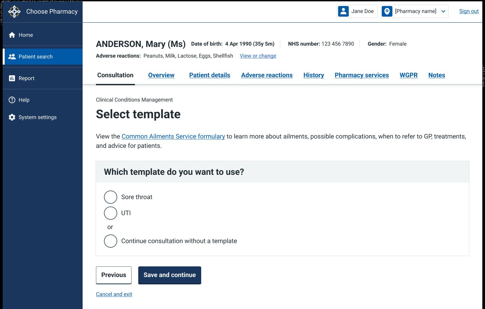
Shown on the IP/IPS service route only. The user manually selects a clinical template (condition-specific questionnaire) to guide the consultation, or opts to continue without one. CAS route users do not see this screen — the condition selected at step 4 automatically determines their clinical path.
| Field | Type | Notes |
|---|---|---|
templateId |
string | null | ID of the selected clinical template (e.g. "sore-throat", "uti"). null if user chooses "Continue consultation without a template". |
templateName |
string | null | Human-readable template label. Mirrors templateId in display form. null when no template selected. |
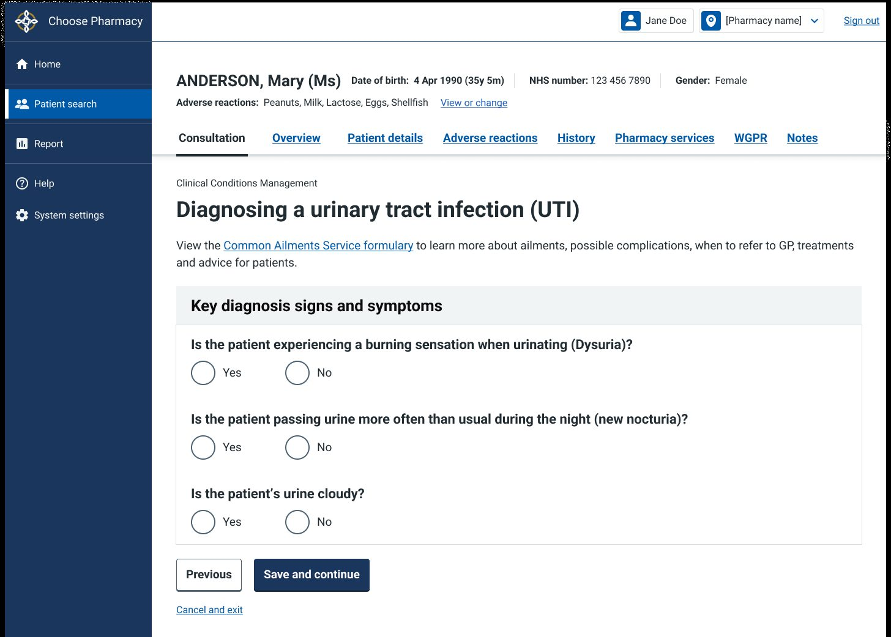
Mandatory diagnostic symptom checklist — all questions must be answered before continuing to Step 3d.
| Field | Type | Notes |
|---|---|---|
dysuria |
boolean | "Is the patient experiencing a burning sensation when urinating?" — Yes / No |
nocturia |
boolean | "Is the patient passing urine more often than usual during the night?" — Yes / No |
cloudyUrine |
boolean | "Is the patient's urine cloudy?" — Yes / No |
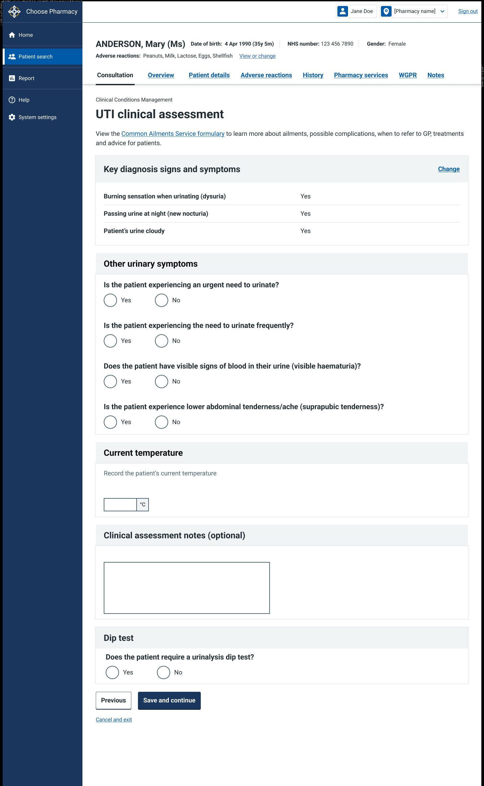
Summarises the key UTI diagnosis answers from Step 3c. Sections for other urinary symptoms, temperature reading, and free-text clinical notes. The pharmacist decides whether to perform a dip stick test — Yes advances to Step 3e, No proceeds directly to Outcome Selection.
| Field | Type | Notes |
|---|---|---|
urgency |
boolean | Is the patient experiencing an urgent need to urinate? — Yes / No |
frequency |
boolean | Is the patient experiencing the need to urinate frequently? — Yes / No |
haematuria |
boolean | Does the patient have visible signs of blood in their urine (visible haematuria)? — Yes / No |
suprapubicTenderness |
boolean | Is the patient experiencing lower abdominal tenderness/ache (suprapubic tenderness)? — Yes / No |
temperature |
number | Body temperature in °C |
clinicalNotes |
string | Free-text clinical notes |
dipTestRequired |
boolean | Yes → Step 3e (dip test); No → Outcome Selection (skips dip test) |
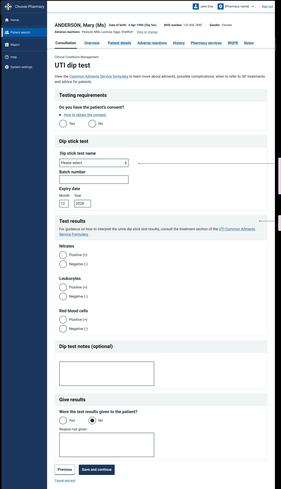
Dip stick test details: consent, test kit information (brand, batch number, expiry date) and result inputs for Nitrates, Leukocytes, and RBCs (Positive / Negative). A "Give results" section captures whether results were shared with the patient. On completion, flow proceeds to Outcome Selection.
| Field | Type | Notes |
|---|---|---|
consent |
boolean | Patient consent to perform dip test |
testName |
enum | Approved dip stick tests: Siemens Multistik 8SG, Siemens Multistik 10SG, Sterilab CombiScreen 5 SYS test strips, Roche Combur - test strips |
batchNumber |
string | Test kit batch number |
expiryDate |
date | Month and year only (YYYY-MM) |
nitrates |
enum | POSITIVE | NEGATIVE |
leukocytes |
enum | POSITIVE | NEGATIVE |
rbcs |
enum | POSITIVE | NEGATIVE |
dipTestNotes |
string | Optional free-text notes |
resultGivenToPatient |
boolean | No reveals a "Reason not given" free-text field |
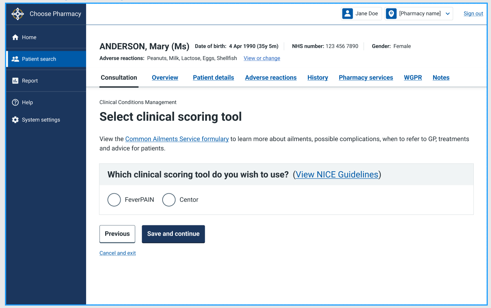
Entry point to the Sore Throat template. The pharmacist selects which clinical scoring tool to use — FeverPAIN or Centor — before proceeding. A link to NICE Guidelines is provided. FeverPAIN selection advances to Step 3g; Centor selection advances to Step 3j.
| Field | Type | Notes |
|---|---|---|
scoringTool |
enum | FEVERPAIN → Step 3g · CENTOR → Step 3j |
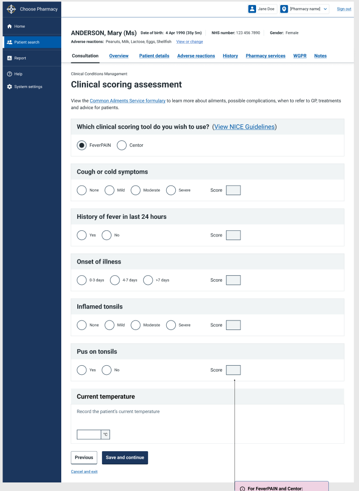
Five FeverPAIN criteria with per-criterion score contribution shown alongside. Scoring tool selection remains editable at the top. On save-and-continue the total score (0–5) is computed server-side and the pharmacist proceeds to Step 3h (outcomes).
| Field | Type | Notes |
|---|---|---|
coughColdSymptoms |
enum | NONE | MILD | MODERATE | SEVERE |
feverHistory |
boolean | History of fever in last 24 hours — Yes / No |
onsetOfIllness |
enum | 0_3_DAYS | 4_7_DAYS | OVER_7_DAYS |
inflamedTonsils |
enum | NONE | MILD | MODERATE | SEVERE |
pusOnTonsils |
boolean | Yes / No |
temperature |
number | Current temperature in °C |
score |
number (read-only) | 0–5, computed server-side; per-criterion boxes auto-populated (0 or 1), always greyed out |
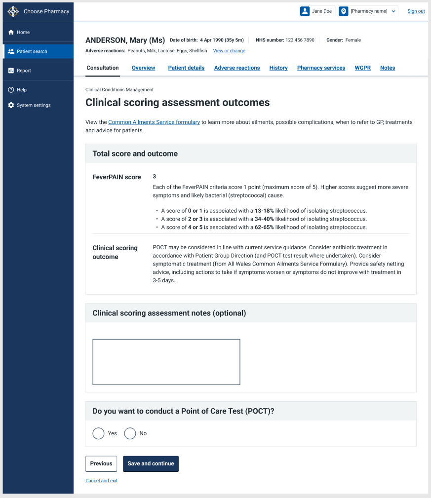
Displays the computed FeverPAIN score (0–5) with streptococcus likelihood guidance: 0–1 → 13–18%, 2–3 → 34–40%, 4–5 → 62–65%. Clinical scoring outcome text is auto-populated from the score. POCT decision gates the next step: Yes → Step 3i, No → Outcome Selection.
| Field | Type | Notes |
|---|---|---|
scoringOutcome |
string (read-only) | Auto-populated from score; references POCT and PGD guidance |
assessmentNotes |
string | Optional free-text notes |
poctDecision |
boolean | Yes → Step 3i (POCT); No → Outcome Selection (skips POCT) |
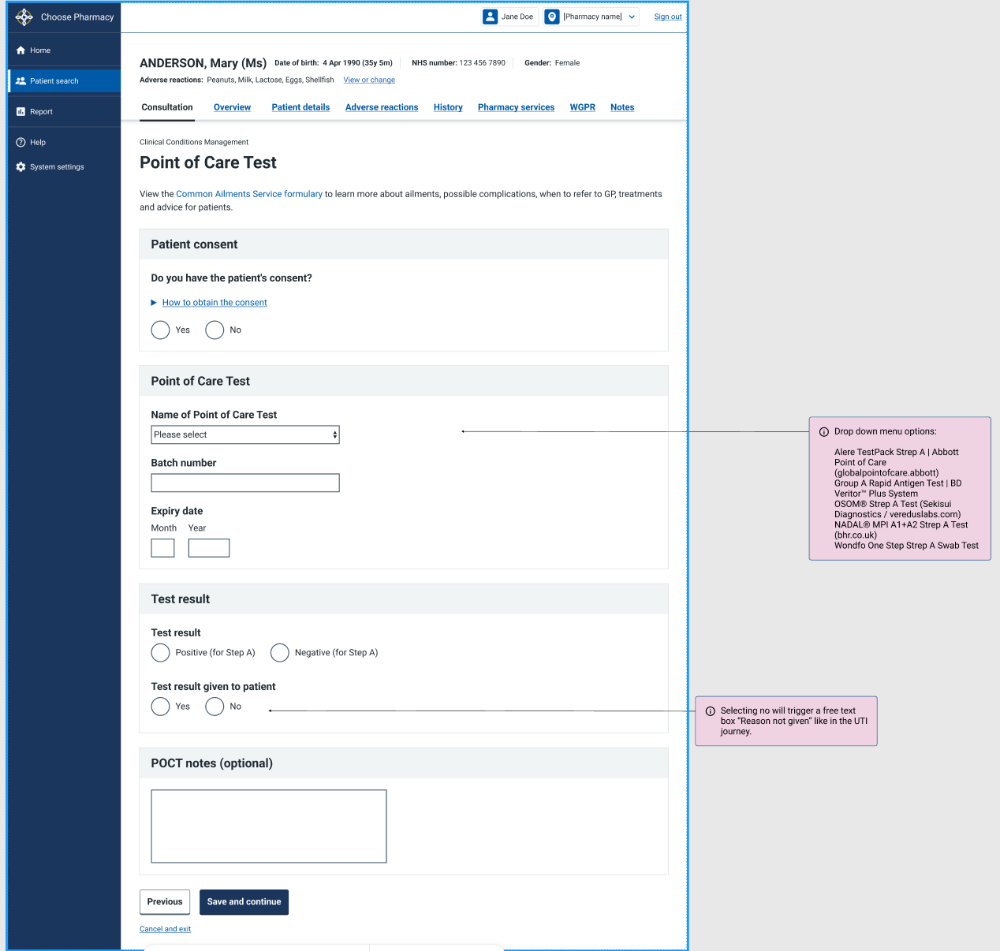
Captures patient consent and full POCT kit details. The test name is a dropdown of approved Strep A rapid antigen tests. Selecting No for "Test result given to patient" reveals a "Reason not given" free-text field (mirrors UTI dip test behaviour). On completion, flow proceeds to Outcome Selection.
| Field | Type | Notes |
|---|---|---|
patientConsent |
boolean | Required before test fields unlock |
poctName |
enum | Approved Strep A tests: Alere TestPack (Abbott), BD Veritor™, OSOM® (Sekisui/Veredus), NADAL® MPI A1+A2, Wondfo One Step |
batchNumber |
string | Test kit batch number |
expiryDate |
date | Month and year only |
testResult |
enum | POSITIVE | NEGATIVE — labelled "for Strep A" |
resultGivenToPatient |
boolean | No reveals reasonNotGiven free-text field |
poctNotes |
string | Optional free-text notes |
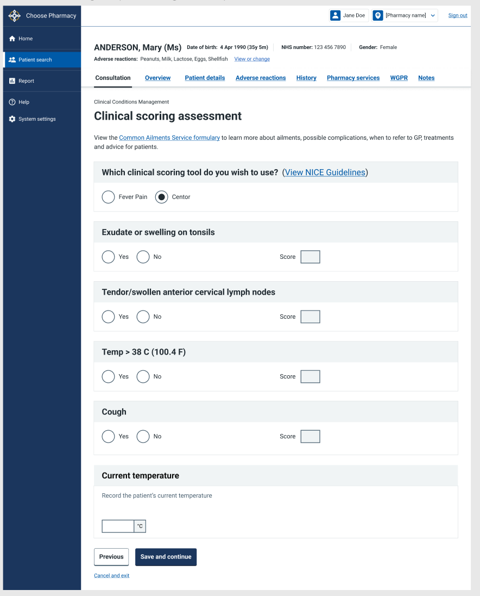
Four Centor criteria, each scored Yes/No. Scoring tool selection remains editable at the top. On save-and-continue the total score (0–4) is computed server-side and the pharmacist proceeds to Step 3k (outcomes). Note: absence of cough scores positive.
| Field | Type | Notes |
|---|---|---|
exudateOrSwelling |
boolean | Exudate or swelling on tonsils |
tenderLymphNodes |
boolean | Tender / swollen anterior cervical lymph nodes |
temperature38Plus |
boolean | Temperature above 38°C / 100.4°F |
absenceOfCough |
boolean | Absence of cough scores positive (shown in UI as "Cough" Yes/No — No = absence of cough) |
temperature |
number | Current temperature in °C |
score |
number (read-only) | 0–4, computed server-side; per-criterion boxes auto-populated (0 or 1), always greyed out |
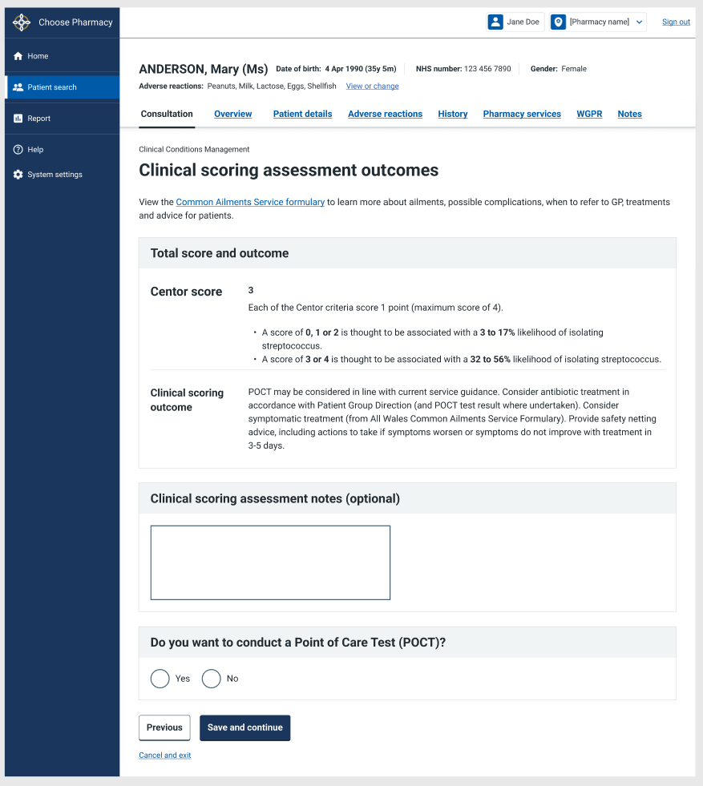
Displays the Centor score (0–4) with streptococcus likelihood: 0–2 → 3–17%, 3–4 → 32–56%. Score is colour-coded and the probability band is shown inline. POCT gate determines next navigation: Yes → Step 3i (shared POCT screen); No → Outcome Selection.
| Field | Type | Notes |
|---|---|---|
centorScore |
number (read-only) | 0–4 with per-criterion breakdown and streptococcus likelihood band |
clinicalNotes |
string | Optional free-text notes |
poctDecision |
boolean | Yes → Step 3i (POCT, shared with FeverPAIN path); No → Outcome Selection |
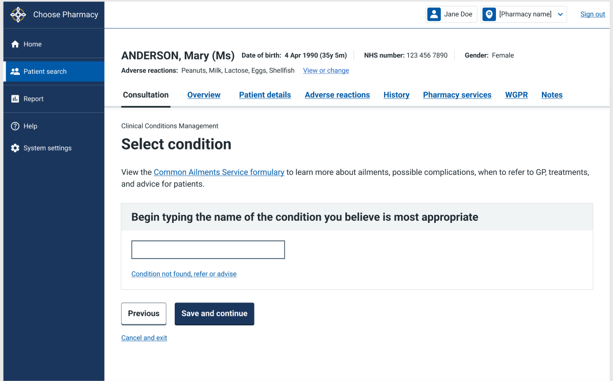
On the IP/IPS route, condition selection feeds into the template selection screen (step 3b). On the CAS route, there is no template selection step — the condition automatically determines the clinical path: Sore Throat routes to the scoring tool (step 3f), UTI routes to the UTI assessment (step 3c), and any other condition routes to the general clinical assessment (step 5).
| Field | Type | Notes |
|---|---|---|
conditionId |
string | Selected from CAS formulary typeahead |
conditionName |
string | Display name of selected condition |
conditionNotFound |
boolean | True if user selected 'Condition not found, refer or advise' escape |
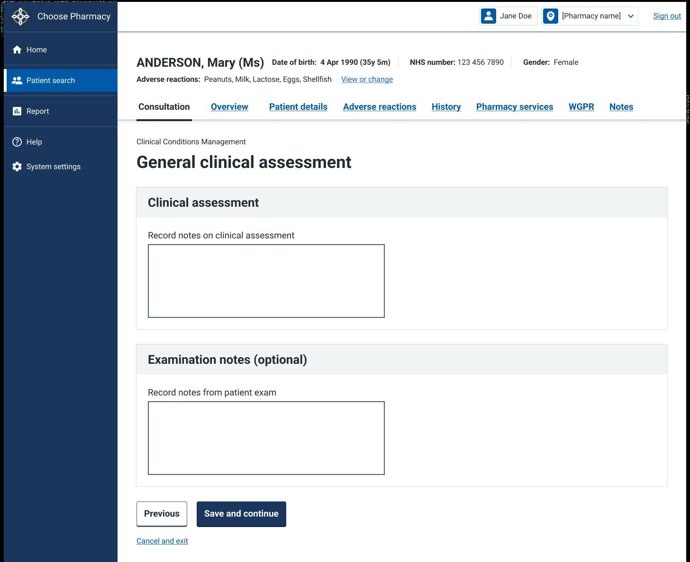
| Field | Type | Notes |
|---|---|---|
clinicalAssessmentNotes |
string | Free text — required |
examinationNotes |
string? | Free text — optional |
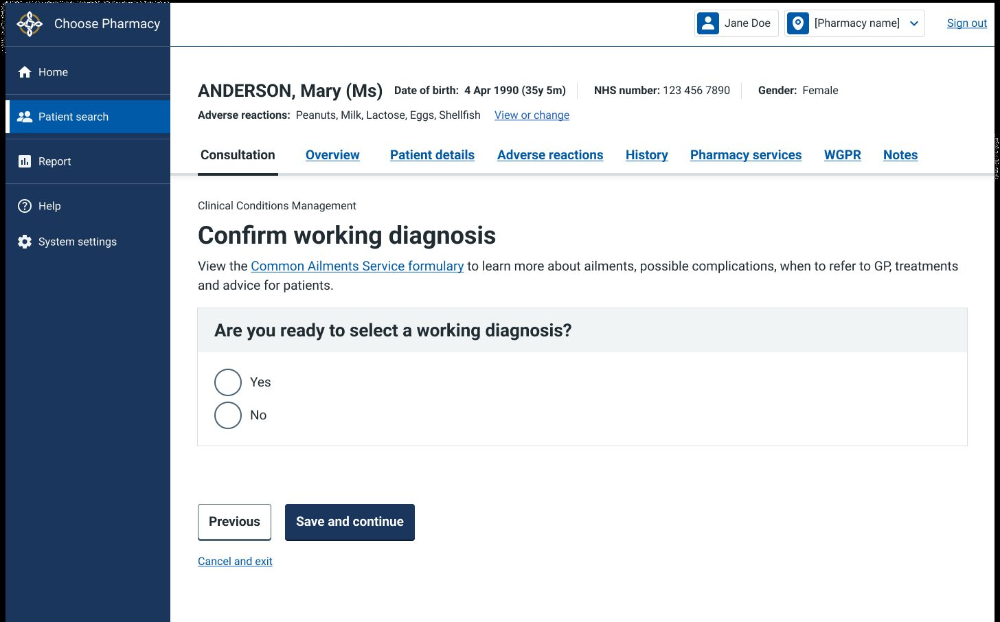
Dynamic screen with 5 states driven by the Yes / No and Covered / Outside choices. Figma base state: 1582:14355.
| Field | Type | Notes |
|---|---|---|
confirmDiagnosis |
boolean | Yes reveals the diagnosis panel; No continues without a working diagnosis |
diagnosisScope |
enum | COVERED | OUTSIDE — visible when confirmDiagnosis = true |
workingDiagnosis |
object | SNOMED concept — { conceptId, term }; confirmed after autocomplete selection e.g. 1102931 | Migraine |
1582:14355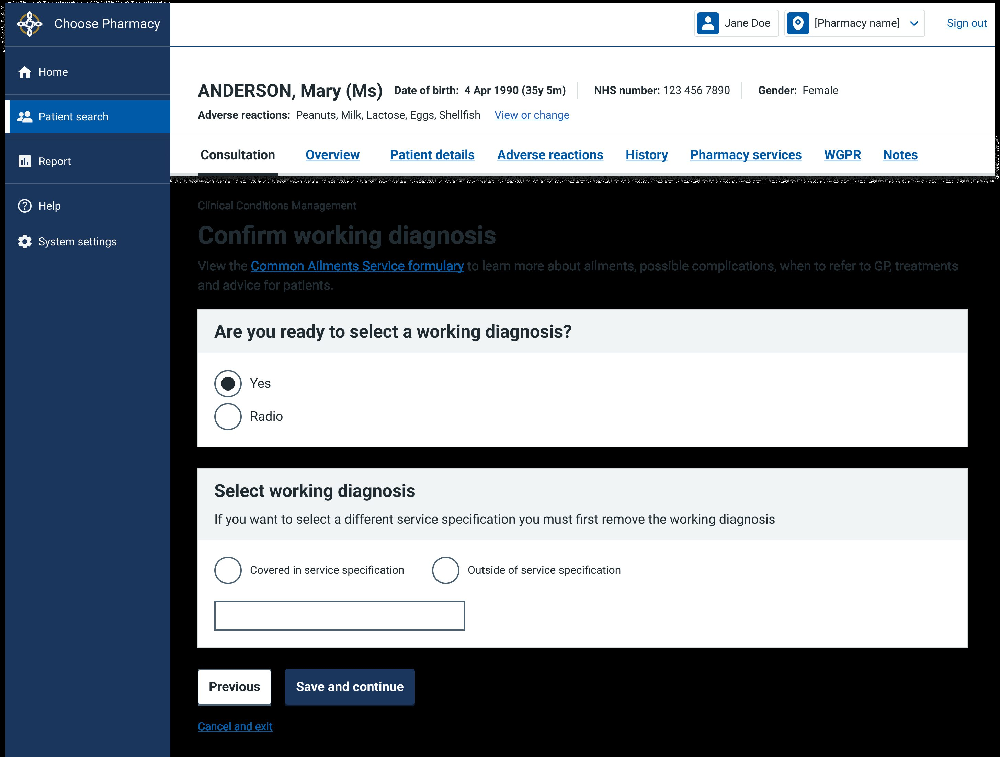
1788:12669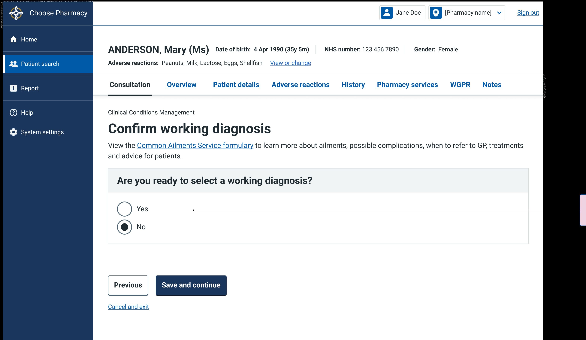
4059:34321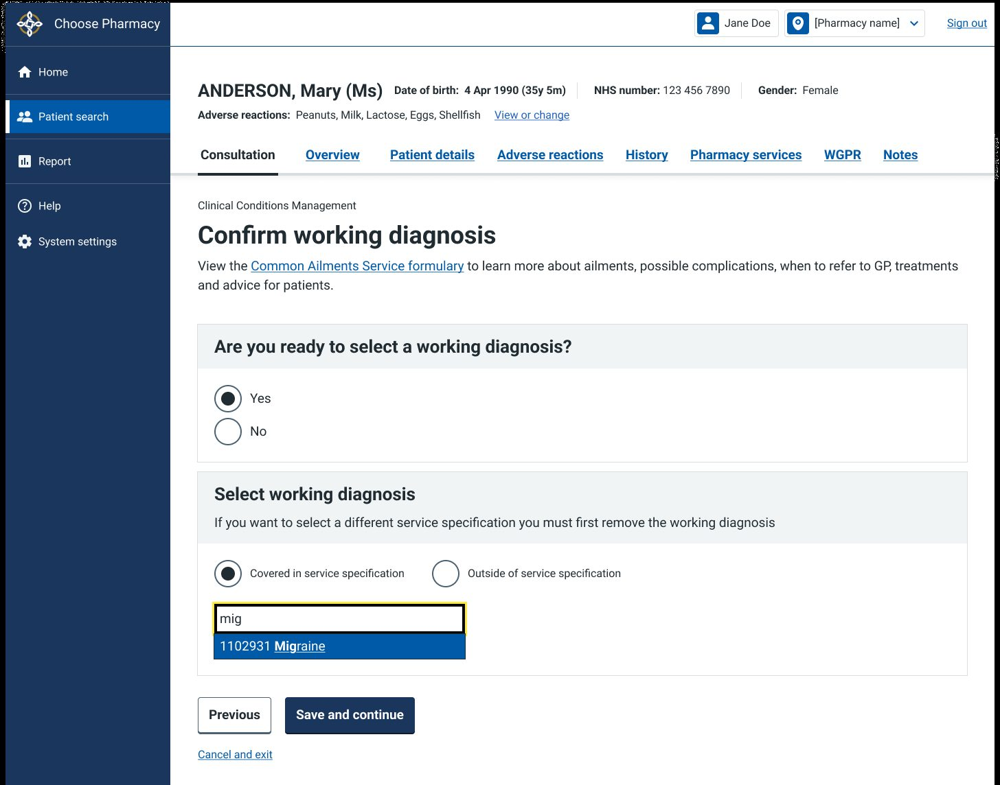
3153:27042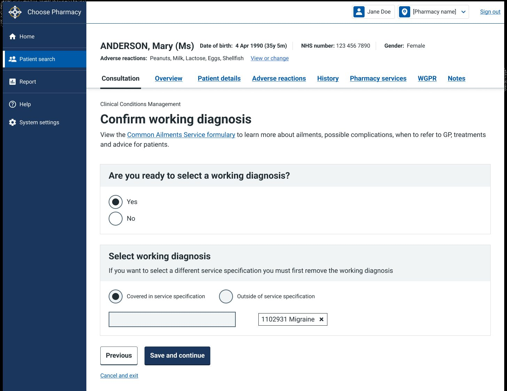
3154:29120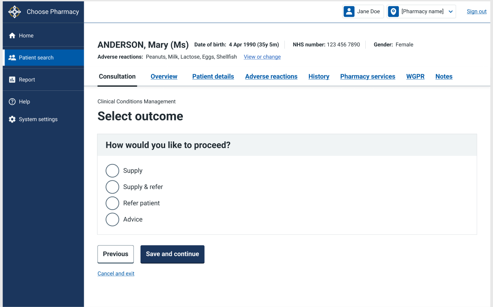
| Field | Type | Notes |
|---|---|---|
outcome |
enum | supply | supply_and_refer | refer | advice |
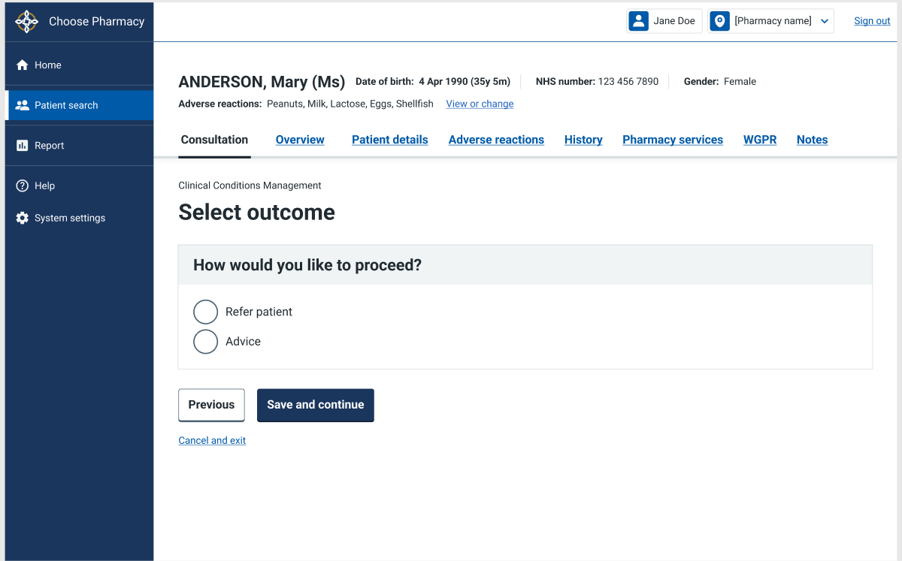
| Field | Type | Notes |
|---|---|---|
outcome |
enum | refer | advice |
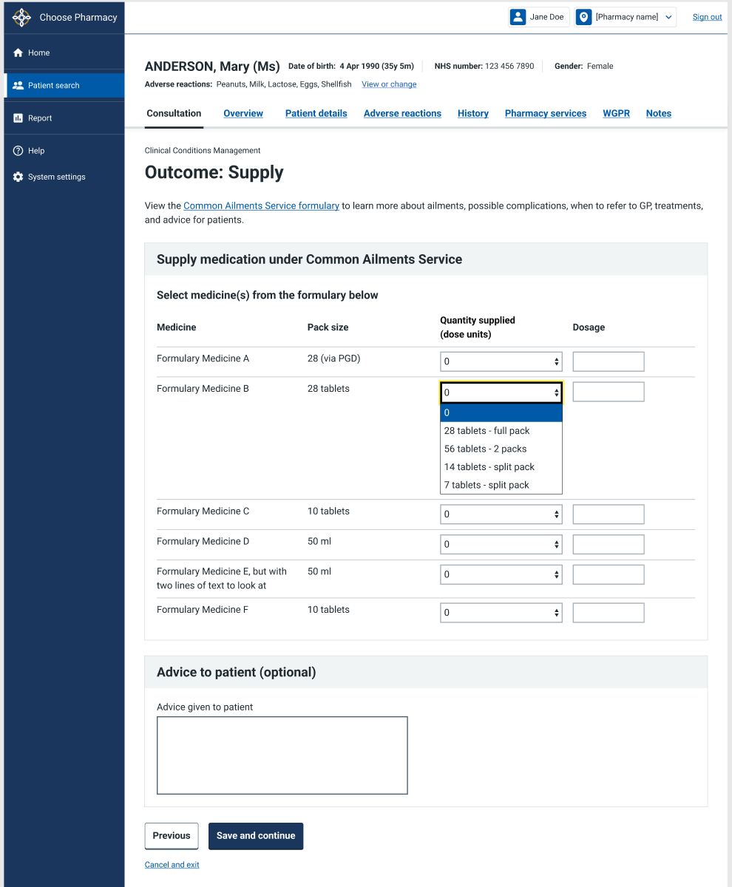
| Field | Type | Notes |
|---|---|---|
medicinesSupplied[] |
object[] | Array of supplied medicines |
medicinesSupplied[].medicineId |
string | Formulary medicine identifier |
medicinesSupplied[].medicineName |
string | Formulary medicine name |
medicinesSupplied[].quantitySupplied |
string | Selected from dose-unit dropdown (e.g. '28 tablets - full pack') |
medicinesSupplied[].dosage |
string | Free text dosage instructions |
adviceToPatient |
string? | Free text — optional |
| Field | Type | Notes |
|---|---|---|
antibioticsSupplied[] |
object[]? | Condition-dependent antibiotic medicines; absent if condition has no antibiotic formulary |
antibioticsSupplied[].medicineId |
string | Formulary antibiotic identifier |
antibioticsSupplied[].medicineName |
string | Formulary antibiotic name |
antibioticsSupplied[].quantitySupplied |
string | Selected from dose-unit dropdown |
antibioticsSupplied[].dosage |
string | Free text dosage instructions |
antibioticsSupplied[].isBackupSupply |
boolean | “Is this a backup supply of antibiotics?” — Yes/No |
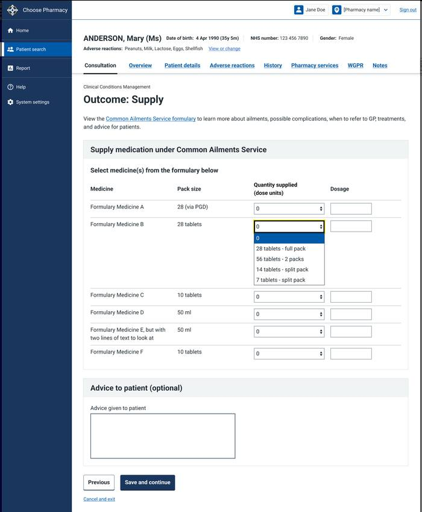
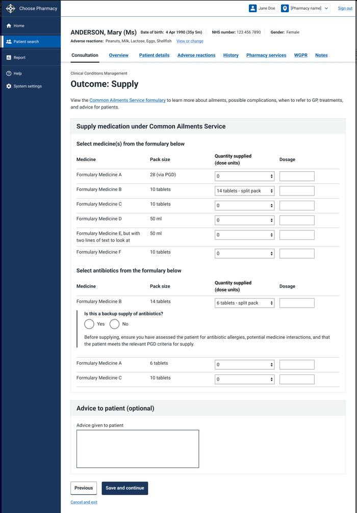
| Field | Type | Notes |
|---|---|---|
medicinesSupplied[] |
object[] | Array of supplied medicines |
medicinesSupplied[].medicineId |
string | Formulary medicine identifier |
medicinesSupplied[].medicineName |
string | Formulary medicine name |
medicinesSupplied[].quantitySupplied |
string | Selected from dose-unit dropdown (e.g. '28 tablets - full pack') |
medicinesSupplied[].dosage |
string | Free text dosage instructions |
adviceToPatient |
string? | Free text — optional |
| Field | Type | Notes |
|---|---|---|
antibioticsSupplied[] |
object[]? | Condition-dependent antibiotic medicines; absent if condition has no antibiotic formulary |
antibioticsSupplied[].medicineId |
string | Formulary antibiotic identifier |
antibioticsSupplied[].medicineName |
string | Formulary antibiotic name |
antibioticsSupplied[].quantitySupplied |
string | Selected from dose-unit dropdown |
antibioticsSupplied[].dosage |
string | Free text dosage instructions |
antibioticsSupplied[].isBackupSupply |
boolean | “Is this a backup supply of antibiotics?” — Yes/No |
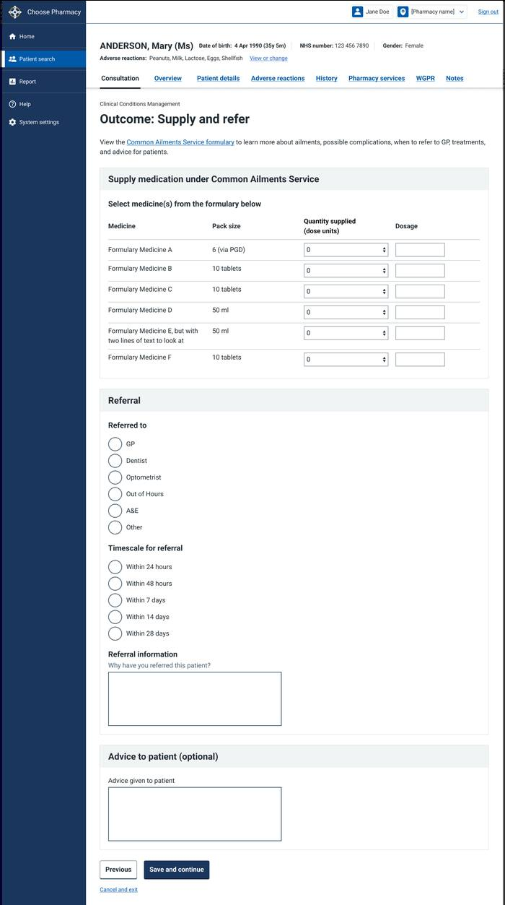
| Field | Type | Notes |
|---|---|---|
medicinesSupplied[] |
object[] | Array of supplied medicines |
medicinesSupplied[].medicineId |
string | Formulary medicine identifier |
medicinesSupplied[].medicineName |
string | Formulary medicine name |
medicinesSupplied[].quantitySupplied |
string | Selected from dose-unit dropdown (e.g. '28 tablets - full pack') |
medicinesSupplied[].dosage |
string | Free text dosage instructions |
adviceToPatient |
string? | Free text — optional |
| Field | Type | Notes |
|---|---|---|
medicineSearch.query |
string? | Text entered into the "Search medicine" typeahead input; may not be persisted after selection |
medicineSearch.preferBranded |
boolean? | Generic/Branded radio toggle — false = Generic (default), true = Branded |
medicinesSupplied[].quantityInstruction |
string? | Pre-populated dosage instruction from the formulary entry (e.g. "Quantity: 10 gram / Apply when needed"); shown beneath medicine name in the Added Medications table |
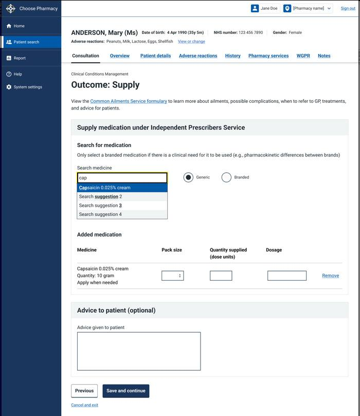
| Field | Type | Notes |
|---|---|---|
medicinesSupplied[] |
object[] | Array of supplied medicines |
medicinesSupplied[].medicineId |
string | Formulary medicine identifier |
medicinesSupplied[].medicineName |
string | Formulary medicine name |
medicinesSupplied[].quantitySupplied |
string | Selected from dose-unit dropdown (e.g. '28 tablets - full pack') |
medicinesSupplied[].dosage |
string | Free text dosage instructions |
adviceToPatient |
string? | Free text — optional |
| Field | Type | Notes |
|---|---|---|
medicineSearch.query |
string? | Text entered into the "Search medicine" typeahead input; may not be persisted after selection |
medicineSearch.preferBranded |
boolean? | Generic/Branded radio toggle — false = Generic (default), true = Branded |
medicinesSupplied[].quantityInstruction |
string? | Pre-populated dosage instruction from the formulary entry (e.g. "Quantity: 10 gram / Apply when needed"); shown beneath medicine name in the Added Medications table |
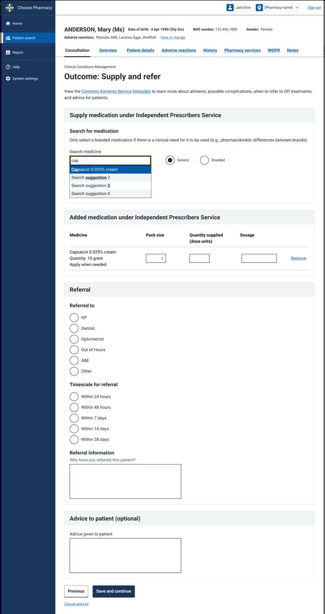
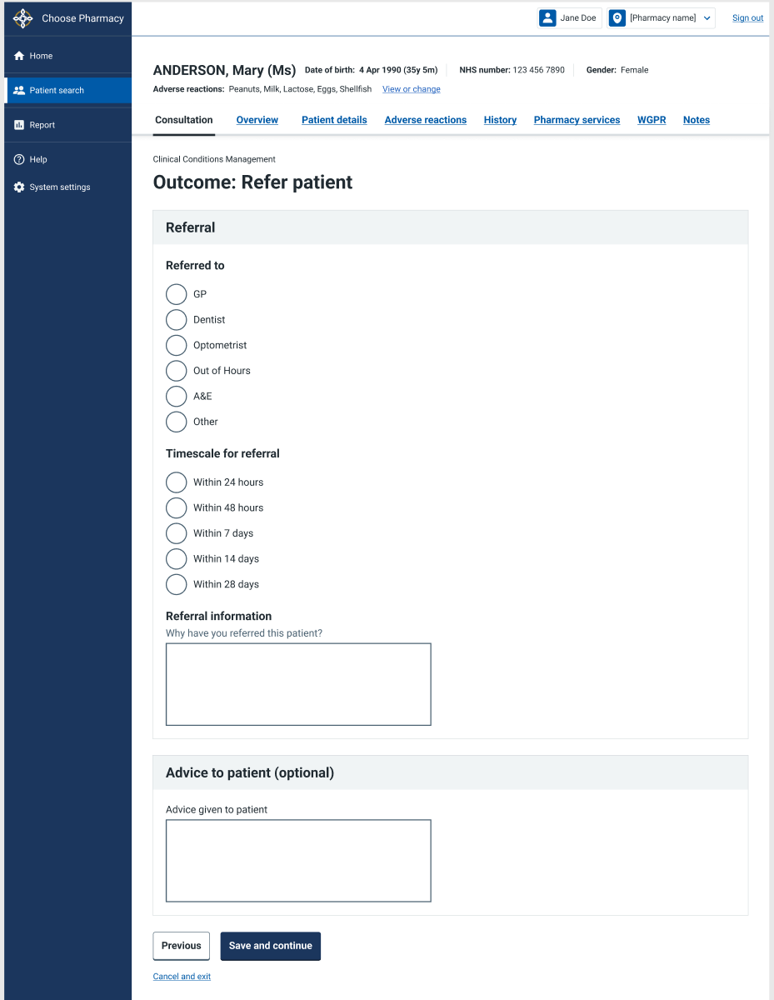
| Field | Type | Notes |
|---|---|---|
referral.referredTo |
enum | gp | dentist | optometrist | out_of_hours | ae | other |
referral.timescale |
enum | 24h | 48h | 7d | 14d | 28d |
referral.information |
string | Why have you referred this patient? — free text |
adviceToPatient |
string? | Free text — optional |
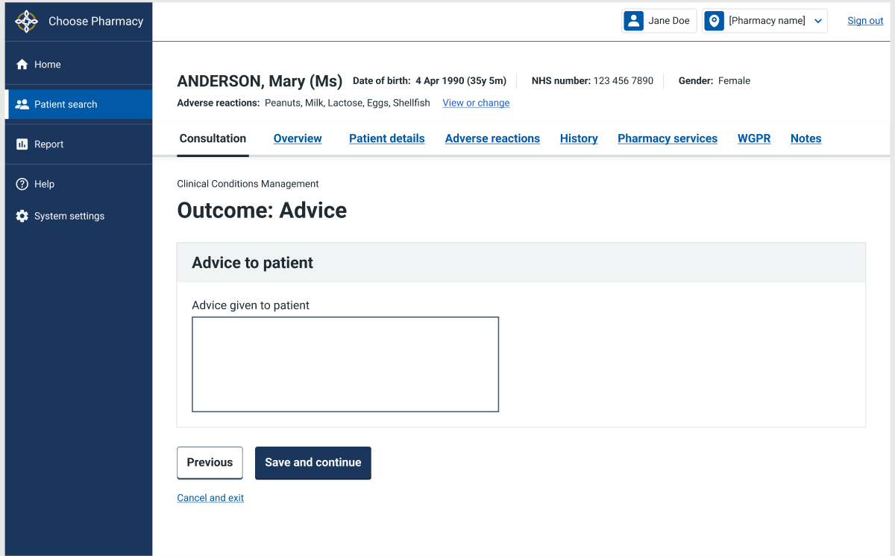
| Field | Type | Notes |
|---|---|---|
adviceToPatient |
string | Free text — required for this outcome |
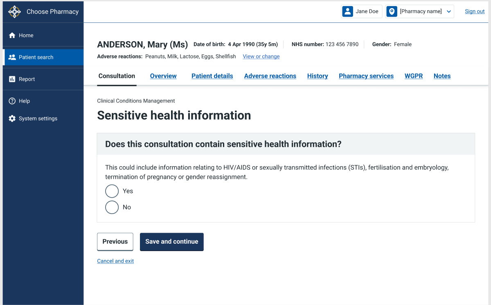
| Field | Type | Notes |
|---|---|---|
isSensitive |
boolean | HIV/AIDS, STIs, fertilisation, termination of pregnancy, gender reassignment |
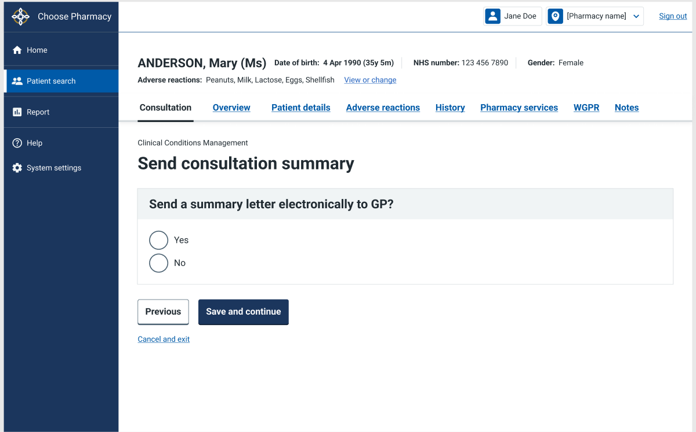
| Field | Type | Notes |
|---|---|---|
sendSummaryToGP |
boolean | Send electronically to GP Yes/No |
Read-only summary of the full consultation record. Layout and sections vary by path.
Sections: Consultation details · Symptoms & history · Service, condition & tool · Clinical scoring assessment · Point of Care test · Consultation outcome · Medication(s) & Antibiotic(s) · Technical information · Sensitive information
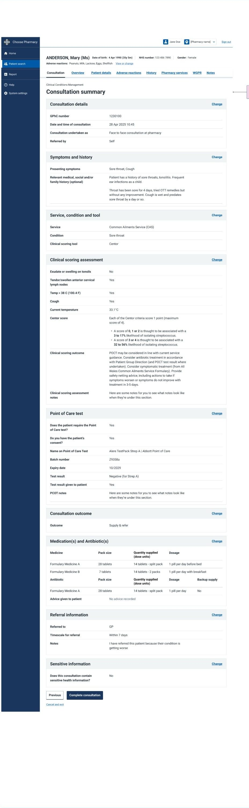
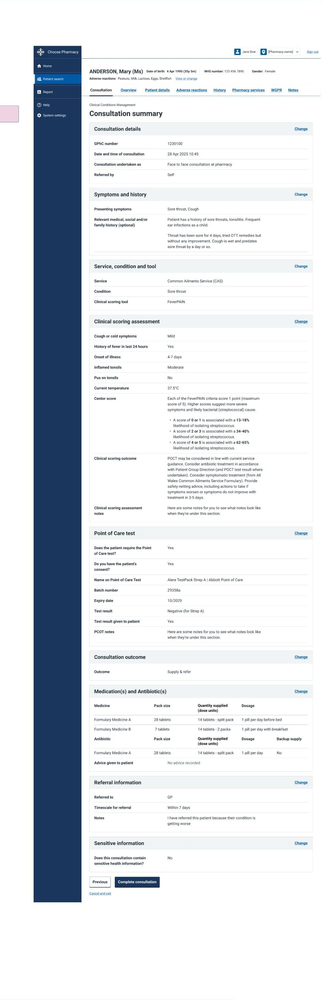
Sections: Consultation details · Symptoms & history · Service & location · General clinical assessment · Confirming diagnosis · Medication(s) · Referral information (if referred) · Sensitive information
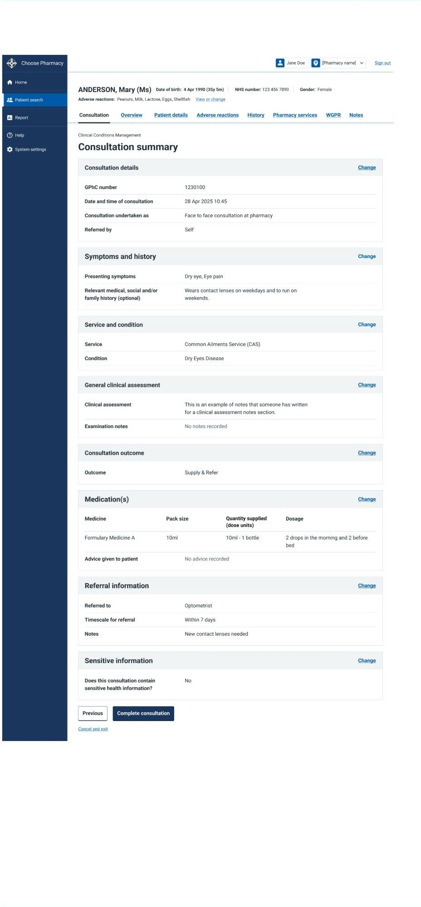
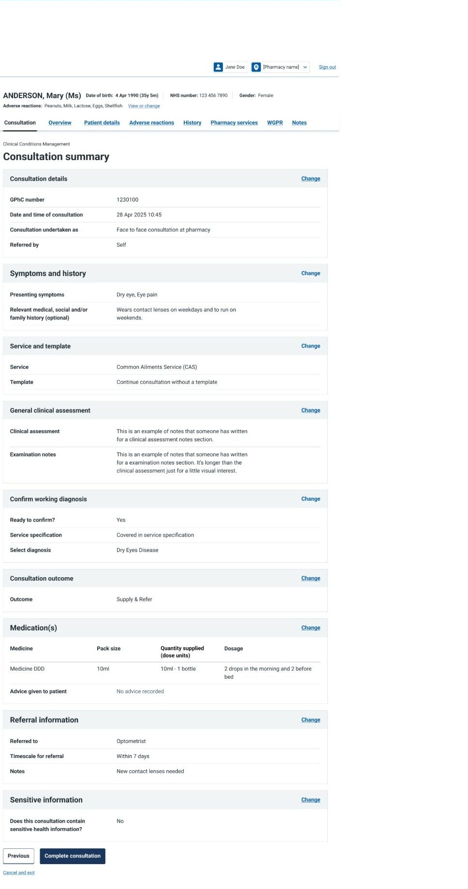
Sections: Consultation details · Symptoms & history · Service, condition & tool · Pre-Diagnosis signs & symptoms · Other clinical symptoms · Urinary dip test · Medication(s) · Referral information (if referred) · Sensitive information
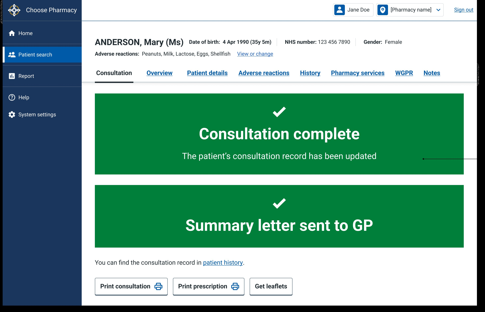
Shown after the consultation summary. Confirms the record has been updated; two variants depending on whether the GP summary was sent electronically.
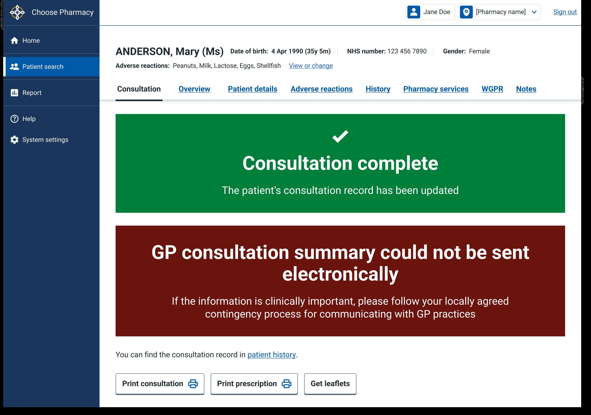